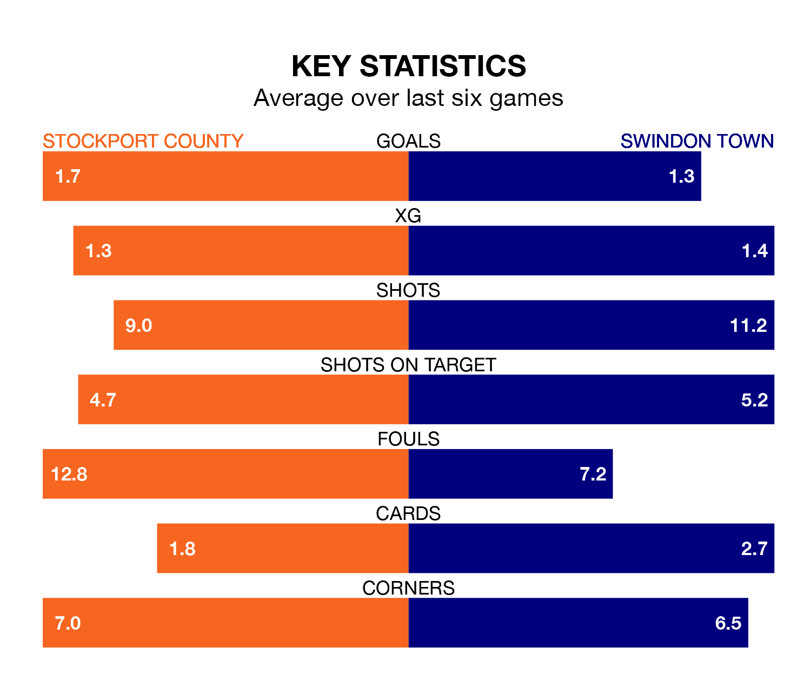

Stockport County are heavy favourites to keep all three points at home in Saturday's kick-off against Swindon Town.
The Hatters, who sit top of EFL League Two with 33 games played, are priced at 1.4 to seal victory at Edgeley Park.
Sitting 17 places and 23 points behind them in the table, Swindon are 6.5 to win with *Betting Company*, while the draw is at 4.8.
With 66 goals in 33 games so far this season, Stockport are the league's highest scorers with 2.0 goals per game. And they are conceding fewer than average, letting in 37 goals at a rate of 1.1 per game.
Swindon are also above average scorers, with 1.7 goals per game, compared to a league average of 1.5. They have conceded 1.8 goals per game.
In Ben Hinchiffe, County can rely on one of the league's safest pair of hands. He has kept 11 clean sheets in his 33 appearances this season, and only one other 'keeper – Mansfield Town's Christy Pym – has been able to prevent the opposition scoring on more occasions in EFL League Two.
In Town's net, Murphy Mahoney has four clean sheets in 23 games. He has conceded a goal every 57 minutes, 50% more often than the 85 minutes between goals for Hinchiffe.
The Hatters are in mixed form in EFL League Two, with two wins and two draws from their last six games.
With a win and two draws over that period, the Robins' form is worse – they have taken five points from 18, compared to the hosts' eight.
In the last five years, Stockport and Swindon have played each other on four occasions. Stockport won three of them and they drew once.
On average, the Hatters scored 2.5 goals and the Robins 0.8 in those matches.
Their last meeting was on November 11, when Stockport won 4-2 away.
Stockport's last match was on Tuesday, a 0-0 draw against Gillingham.
Swindon lost 2-1 against Milton Keynes Dons last time out, on February 17, with Charlie Austin on the scoresheet.
Updated: 10:08 (UTC), 23/02/24